Overview
Role: Intern | Organization: AIC NITTE | Duration: 1st Year Internship
Focus Areas:
Hands-on internship focused on bridging digital design, hardware systems, and real-world engineering workflows.
3D Aircraft Modeling using Tinkercad
Tools:
What I Did
- Designed a complete 3D aircraft model using primitive shapes.
- Applied scaling, alignment, and geometric modeling principles.
- Prepared model for real-world manufacturing.
Process
- Created model using cubes, cylinders, cones.
- Exported as STL file.
- Printed using additive manufacturing.
Outcome
Successfully converted digital design → physical 3D printed model.
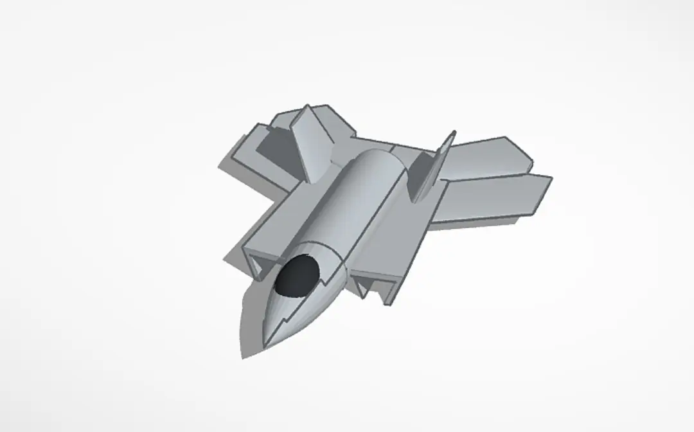
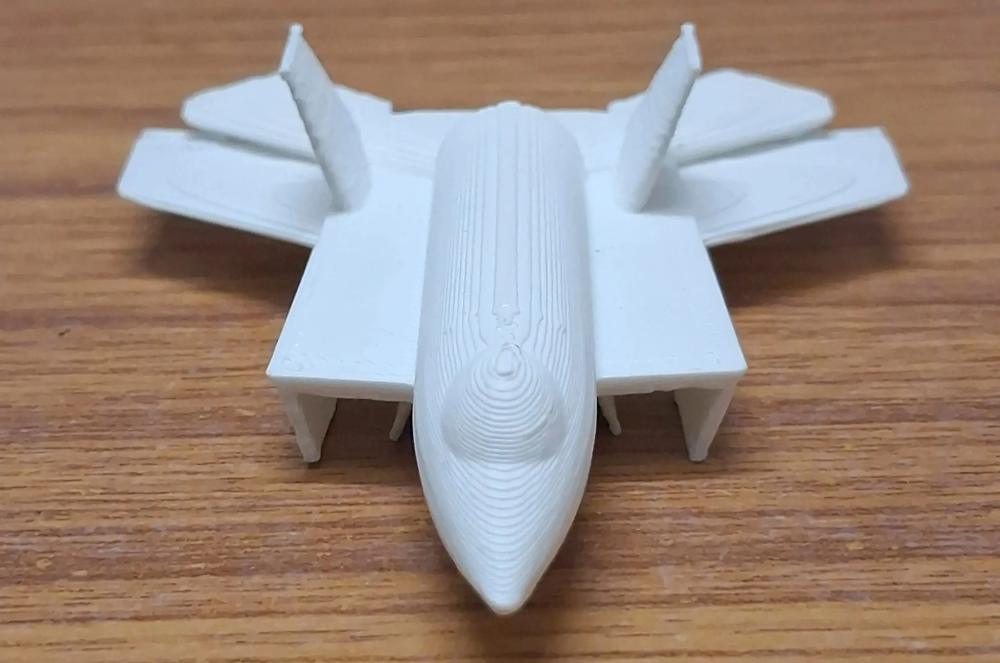
Model Showcase
3D Aircraft Model demonstration.
3D Scanning using Meshmixer
Tools:
What I Did
- Captured object images from multiple angles.
- Generated 3D model using photogrammetry.
- Cleaned and refined mesh.
Technical Work
- Used "Make Solid", "Smooth", "Close Cracks".
- Removed noise and improved surface quality.
Outcome
Converted physical object → clean digital 3D model.
Scanning Showcase
Classroom atmosphere during the workshop session.
9/11 attack simulation.
Introduction to Arduino & Sensor Integration
Before diving into complex embedded systems, I attended a hands-on introductory session focused on microcontrollers and sensors. We were provided with original Arduino boards, breadboards, IR sensors, and LEDs to learn the fundamentals of circuit building and hardware integration.
- Understood digital and analog pin configurations on the Arduino.
- Wired an IR sensor to control a red LED, observing the sensor's blue indicator glow on light surfaces and the red LED glow on dark surfaces.
- Gained practical experience bridging code with physical hardware components on a breadboard.
IR sensor glowing blue for a white surface and activating the red LED for a dark surface.
Further testing of the Arduino and breadboard circuit setup.
Arduino-Based Tic Tac Toe System
System Overview
Built an interactive 2-player game using Arduino Uno. Integrated LEDs, joystick, push button, and buzzer.
Hardware
- Arduino Uno R3
- 9 LEDs (3×3 grid)
- Joystick module
- Push button
- Buzzer
- Breadboard + resistors
Features
- Real-time cursor navigation using joystick
- Turn-based gameplay
- LED-based visual feedback
- Win detection logic
- Buzzer alert on win
Outcome
Developed a complete embedded system combining hardware control and real-time game logic.
👉 View Full Code
// Define LED pins
const int ledPins[9] = {2, 3, 4, 5, 6, 7, 8, 9, 10};
// Define input pins
const int buttonPin = 12;
const int buzzerPin = 13;
const int vrxPin = A0;
const int vryPin = A1;
// Game variables
int board[9] = {0}; // 0: empty, 1: X, 2: O
int currentPlayer = 1; // 1: X, 2: O
int selected = 0; // Selected cell index
// Timing variables for blinking
unsigned long previousMillis = 0;
const long blinkInterval = 300;
bool blinkState = false;
void setup() {
for (int i = 0; i < 9; i++) {
pinMode(ledPins[i], OUTPUT);
digitalWrite(ledPins[i], LOW);
}
pinMode(buttonPin, INPUT_PULLUP);
pinMode(buzzerPin, OUTPUT);
digitalWrite(buzzerPin, LOW);
Serial.begin(9600);
}
void loop() {
int xValue = analogRead(vrxPin);
int yValue = analogRead(vryPin);
selected = getSelectedCell(xValue, yValue);
blinkSelectedLED();
if (digitalRead(buttonPin) == LOW) {
delay(200);
if (board[selected] == 0) {
board[selected] = currentPlayer;
if (checkWin(currentPlayer)) {
indicateWin(currentPlayer);
while (true);
}
currentPlayer = (currentPlayer == 1) ? 2 : 1;
}
}
}
int getSelectedCell(int x, int y) {
int row = 1;
int col = 1;
if (x < 341) col = 0;
else if (x > 682) col = 2;
if (y < 341) row = 0;
else if (y > 682) row = 2;
return row * 3 + col;
}
void blinkSelectedLED() {
unsigned long currentMillis = millis();
if (currentMillis - previousMillis >= blinkInterval) {
previousMillis = currentMillis;
blinkState = !blinkState;
for (int i = 0; i < 9; i++) {
if (i == selected && board[i] == 0) {
digitalWrite(ledPins[i], blinkState ? HIGH : LOW);
} else {
if (board[i] == 1) {
digitalWrite(ledPins[i], HIGH);
} else if (board[i] == 2) {
digitalWrite(ledPins[i], blinkState ? HIGH : LOW);
} else {
digitalWrite(ledPins[i], LOW);
}
}
}
}
}
bool checkWin(int player) {
int winCombos[8][3] = {
{0, 1, 2}, {3, 4, 5}, {6, 7, 8},
{0, 3, 6}, {1, 4, 7}, {2, 5, 8},
{0, 4, 8}, {2, 4, 6}
};
for (int i = 0; i < 8; i++) {
if (board[winCombos[i][0]] == player &&
board[winCombos[i][1]] == player &&
board[winCombos[i][2]] == player) {
return true;
}
}
return false;
}
void indicateWin(int player) {
digitalWrite(buzzerPin, HIGH);
delay(1000);
digitalWrite(buzzerPin, LOW);
for (int i = 0; i < 9; i++) {
if (player == 1) {
if (i == 0 || i == 2 || i == 4 || i == 6 || i == 8) {
digitalWrite(ledPins[i], HIGH);
} else {
digitalWrite(ledPins[i], LOW);
}
} else {
if (i != 4) {
digitalWrite(ledPins[i], HIGH);
} else {
digitalWrite(ledPins[i], LOW);
}
}
}
}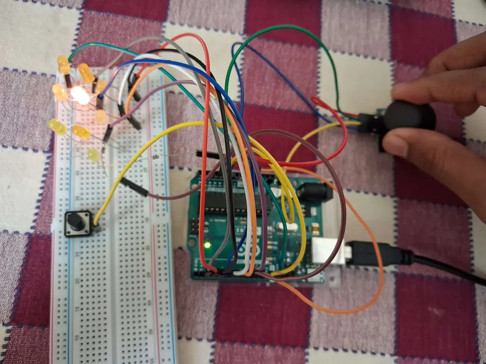
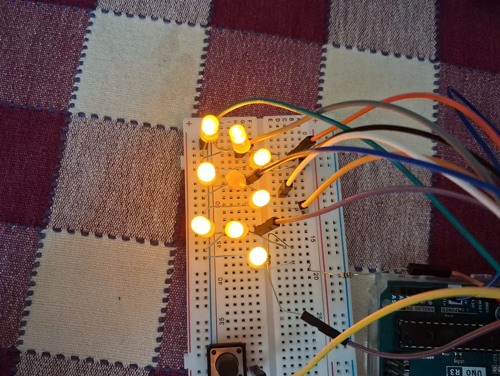
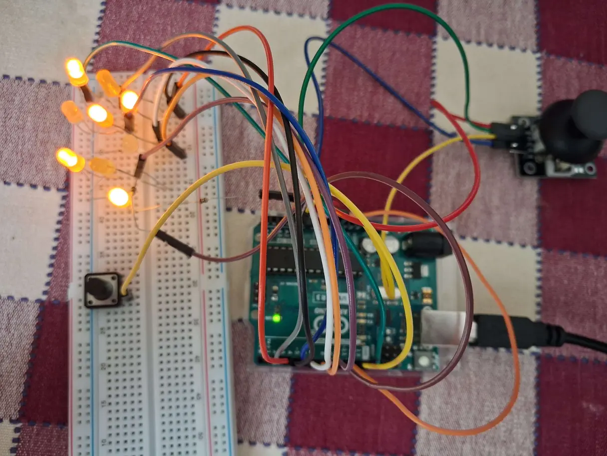
Innovation & Design Thinking Session
- Participated in an intensive workshop covering the core frameworks of innovation and user-centric design.
- Learned effective problem-solving methodologies to tackle real-world engineering and business challenges.
- Explored strategies for transforming rough ideas into viable, scalable startup prototypes.
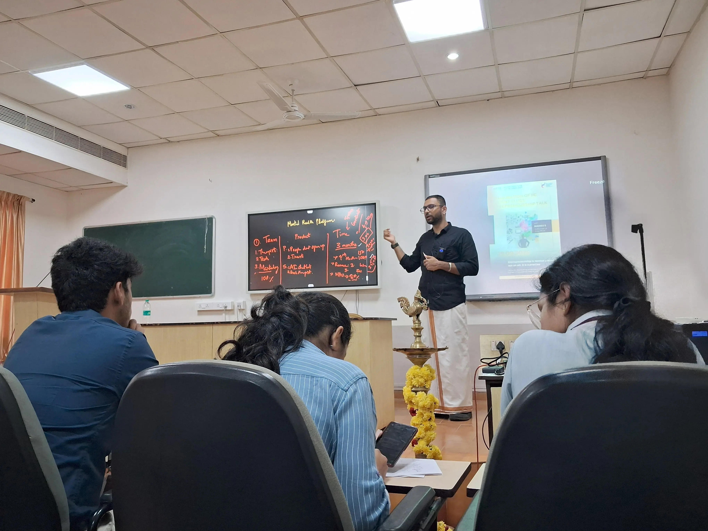
Startup Ecosystems Virtual Session
Date: June 13, 2025 | Format: Virtual Masterclass
- Participated in an intensive, day-long virtual session exploring the foundational pillars that build and sustain thriving startup ecosystems.
- Gained insights into the complete startup lifecycle, from early-stage incubation and funding strategies to market acceleration.
- Learned how emerging tech ventures navigate investor relations, product-market fit, and sustainable scaling.
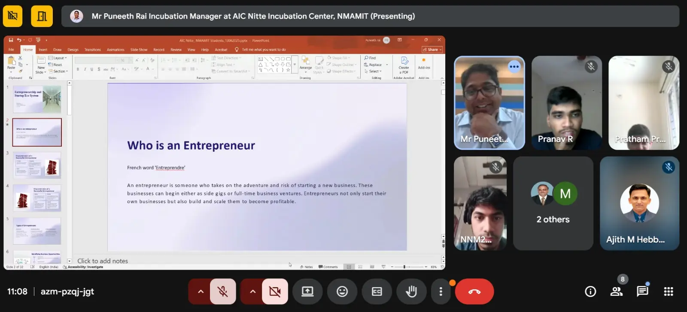
Industrial Visit – SKF Elixer India Pvt Ltd
Location: Moodbidri, Mangalore, Karnataka
- Observed real-world manufacturing processes.
- Learned about industrial automation and production workflows.
- Understood practical application of engineering concepts.
Industrial Visit Showcase
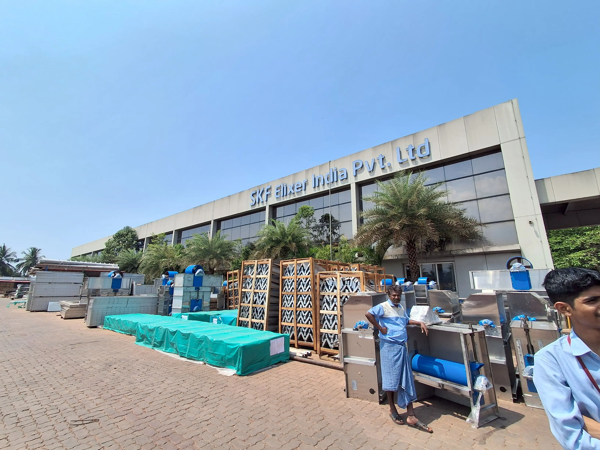
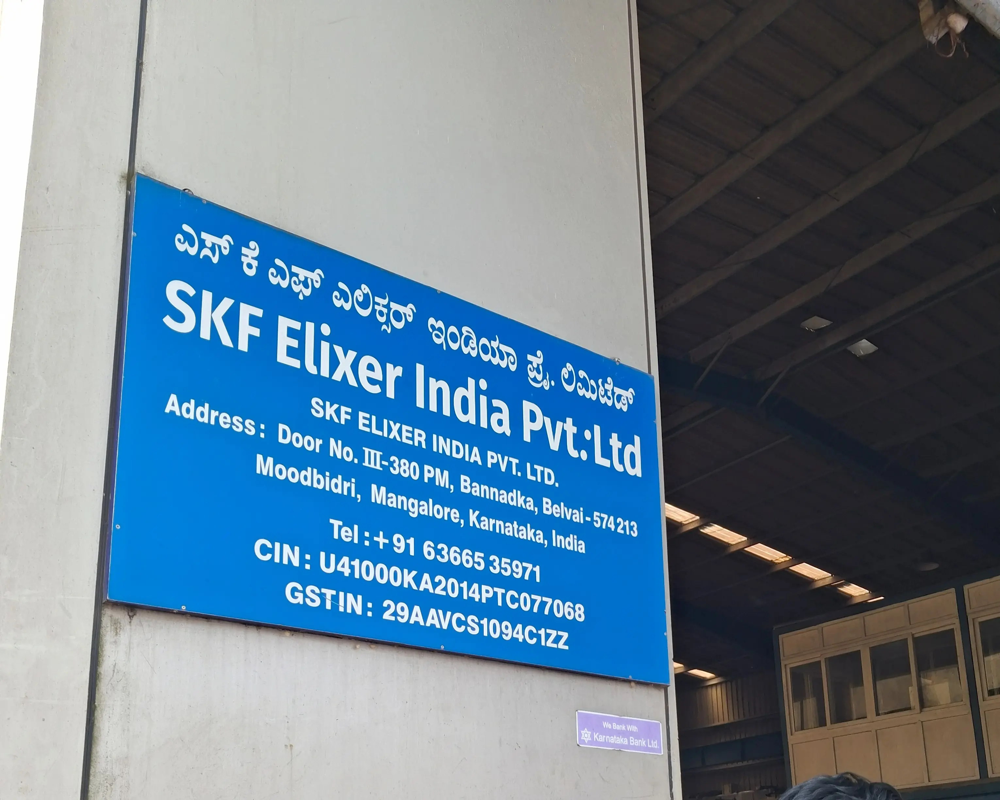
Manufacturing process of Institutional water systems.
Outside view of the manufacturing factory.
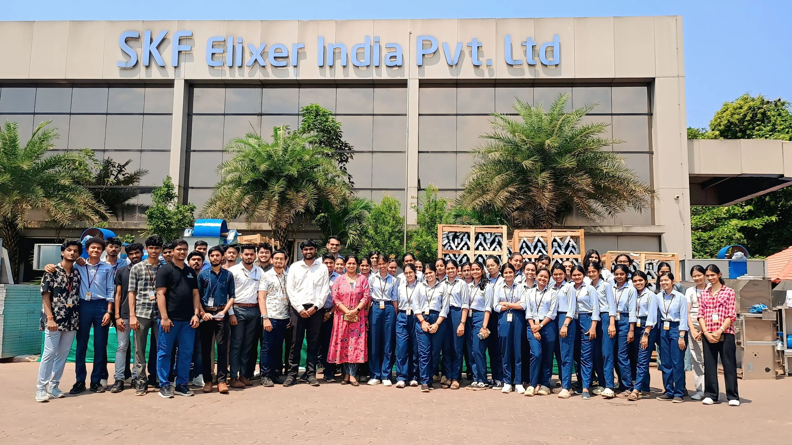
Internship Completion & Certification
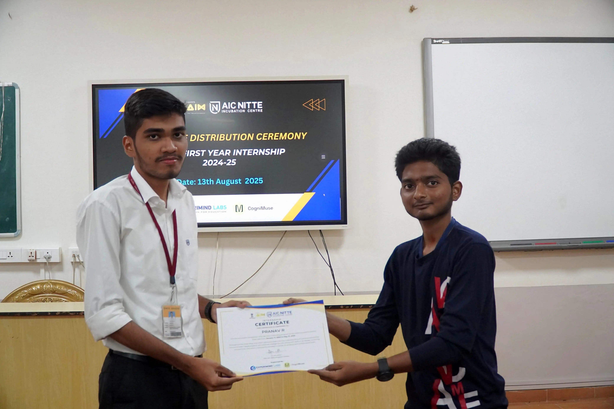
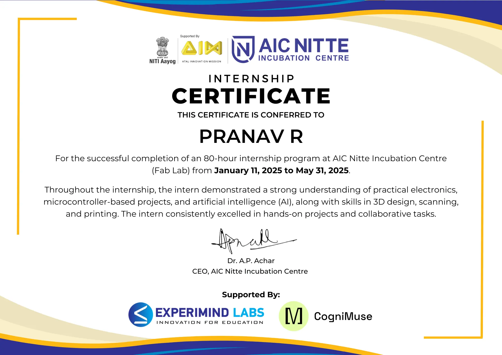
Key Learnings
- Bridged gap between digital design and physical manufacturing.
- Learned embedded system design and hardware interfacing.
- Gained exposure to real-world engineering environments.
- Improved problem-solving through hands-on projects.